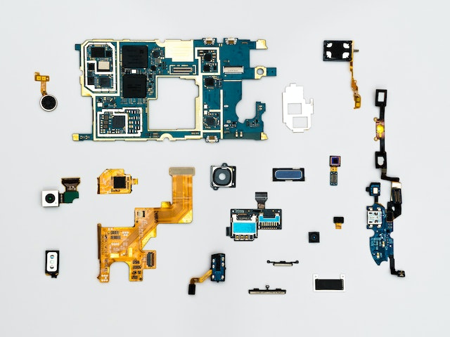

Skills & Experiencias

Usando conceitos e técnicas para projetar sites de alta performace sem perder o foco nos resultados, usabilidade e experiência do usuário.
Skills
UI Design
O segredo está no desenvolvimento dacriatividade para a criação de interfaces.
Desenvolvimento
Desenvolvimento otimizado no back-end e otimizando o responsivo no front.
Motion Design
Animações para aumentar o engajamento do usuário, de maneira otimizada.
Experiências
Front-end developer
@Agência e-plus
Desenvolvimento e evolução de lojas com plataforma Vtex CMS.
Fevereiro 2021 - Dezembro de 2021
Front-end developer
@Maeztra Consultoria
Evolução de lojas com plataformaVtex CMS e Vtex IO .
Dezembro - 2021 - Atualmente 2022
Front-end developer
@Point do Design
Criação e prototipagem de interfaces web com o Figma.
Janeiro - 2019 - Março 2022
Portfolio

Point Design
UI Projeto
Point Design
Desenvolvimento do web site
Supro Store Online
Desenvolvimento do web site